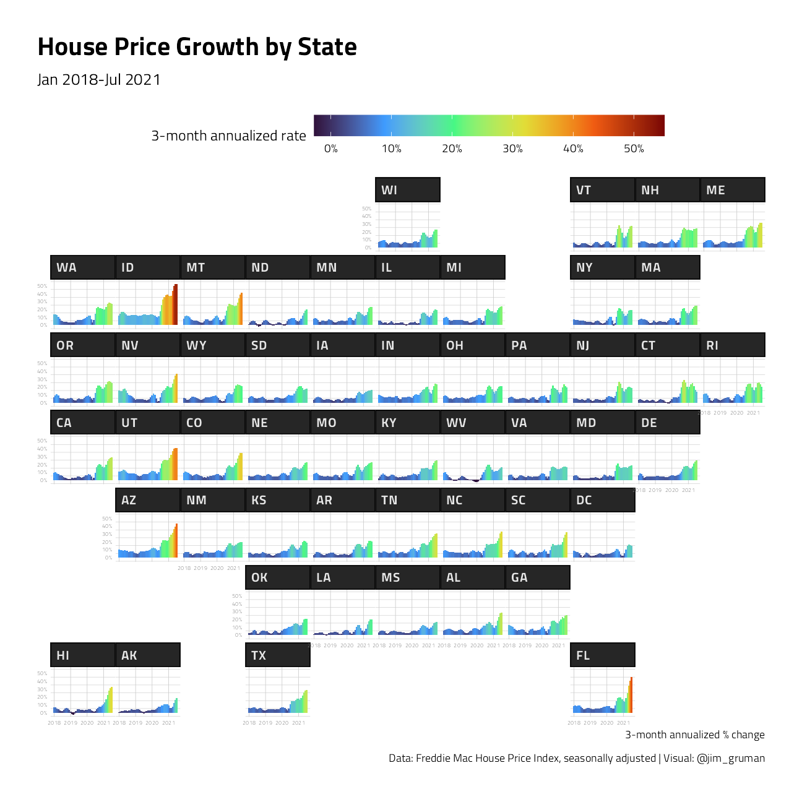
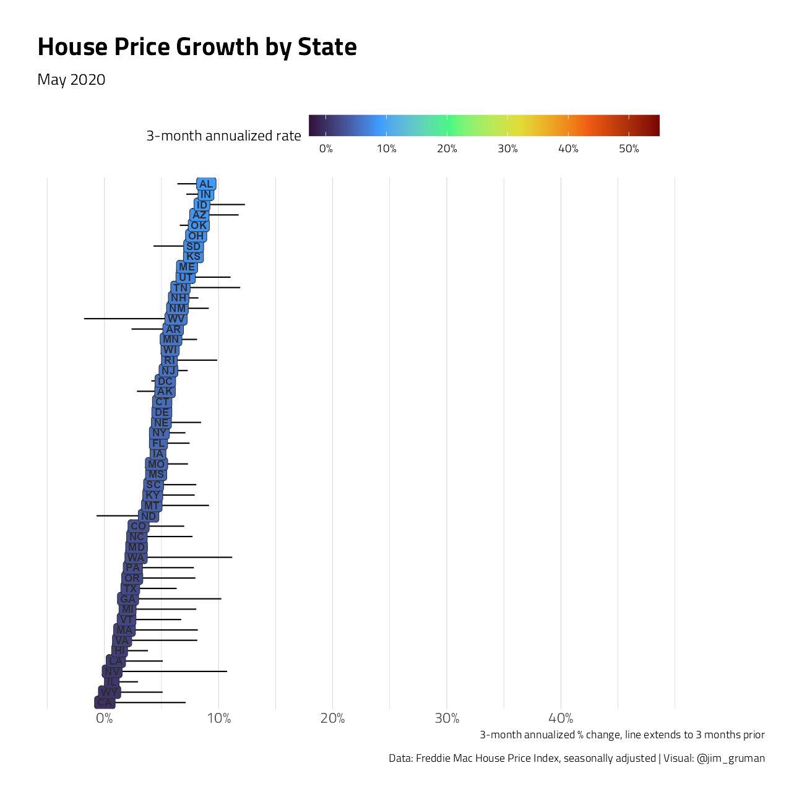
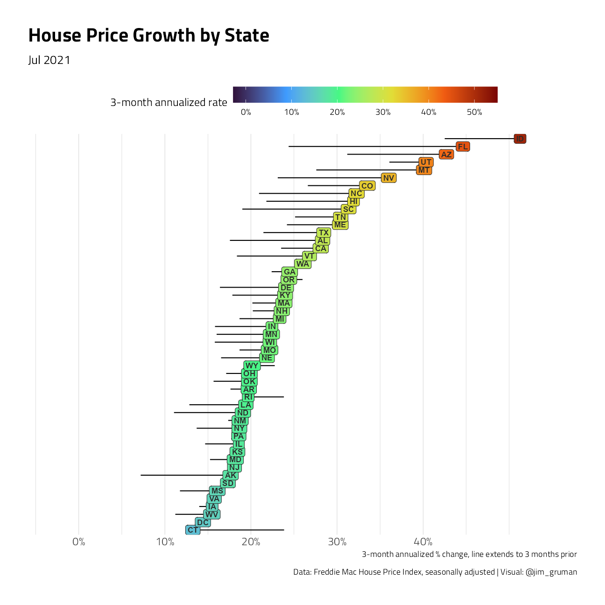

FreddieMac House Prices
Jim Gruman
September 13, 2021
Last updated: 2021-09-13
Checks: 7 0
Knit directory: myTidyTuesday/
This reproducible R Markdown analysis was created with workflowr (version 1.6.2). The Checks tab describes the reproducibility checks that were applied when the results were created. The Past versions tab lists the development history.
Great! Since the R Markdown file has been committed to the Git repository, you know the exact version of the code that produced these results.
Great job! The global environment was empty. Objects defined in the global environment can affect the analysis in your R Markdown file in unknown ways. For reproduciblity it’s best to always run the code in an empty environment.
The command set.seed(20210907) was run prior to running the code in the R Markdown file. Setting a seed ensures that any results that rely on randomness, e.g. subsampling or permutations, are reproducible.
Great job! Recording the operating system, R version, and package versions is critical for reproducibility.
Nice! There were no cached chunks for this analysis, so you can be confident that you successfully produced the results during this run.
Great job! Using relative paths to the files within your workflowr project makes it easier to run your code on other machines.
Great! You are using Git for version control. Tracking code development and connecting the code version to the results is critical for reproducibility.
The results in this page were generated with repository version c975989. See the Past versions tab to see a history of the changes made to the R Markdown and HTML files.
Note that you need to be careful to ensure that all relevant files for the analysis have been committed to Git prior to generating the results (you can use wflow_publish or wflow_git_commit). workflowr only checks the R Markdown file, but you know if there are other scripts or data files that it depends on. Below is the status of the Git repository when the results were generated:
Ignored files:
Ignored: .Rhistory
Ignored: .Rproj.user/
Ignored: catboost_info/
Ignored: data/2021-09-08/
Ignored: data/acs_poverty.rds
Ignored: data/fmhpi.rds
Ignored: data/grainstocks.rds
Ignored: data/hike_data.rds
Ignored: data/us_states.rds
Ignored: data/us_states_hexgrid.geojson
Ignored: data/weatherstats_toronto_daily.csv
Untracked files:
Untracked: code/work list batch targets.R
Untracked: figure/
Unstaged changes:
Modified: code/_common.R
Note that any generated files, e.g. HTML, png, CSS, etc., are not included in this status report because it is ok for generated content to have uncommitted changes.
These are the previous versions of the repository in which changes were made to the R Markdown (analysis/HousePrices.Rmd) and HTML (docs/HousePrices.html) files. If you’ve configured a remote Git repository (see ?wflow_git_remote), click on the hyperlinks in the table below to view the files as they were in that past version.
| File | Version | Author | Date | Message |
|---|---|---|---|---|
| Rmd | c975989 | opus1993 | 2021-09-13 | use most recent Freddie Mac data and common.R baseline |
Derived from Len Kiefer’s excellent post at Visual Meditations on House Prices 2020 Edition
Our goal here is to explore several ways of visualizing current aggregated housing prices, using the Freddie Mac House Price Index. We’ll be looking at the annualized rate of change over 3-month sliding windows. For example, the latest data is through October 2020, so the rate of change we’re looking at is from July to October (growth in August, September, October).
suppressPackageStartupMessages({
library(tidyverse)
library(lubridate)
library(hrbrthemes)
extrafont::loadfonts(quiet = TRUE)
library(geofacet)
library(gganimate)
})
source(here::here("code","_common.R"),
verbose = FALSE,
local = knitr::knit_global())Registered S3 method overwritten by 'tune':
method from
required_pkgs.model_spec parsnipggplot2::theme_set(theme_jim(base_size = 12))We will load the latest data directly from the web site and cache it in a local data folder.
fmhpi_file <- here::here("data/fmhpi.rds")
if (!file.exists(fmhpi_file)) {
write_rds(read_csv("http://www.freddiemac.com/fmac-resources/research/docs/fmhpi_master_file.csv"), fmhpi_file)
}
dt <- read_rds(fmhpi_file) %>%
group_by(GEO_Type, GEO_Name) %>%
mutate(
hpa12 = Index_SA / lag(Index_SA, 12) - 1,
hpa3 = (Index_SA / lag(Index_SA, 3))**4 - 1,
date = as_date(ISOdate(Year, Month, 1)),
hpa3_lag3 = lag(hpa3, 3)
) %>%
ungroup()
dts <- dt %>%
filter(Year > 2017, GEO_Type == "State") %>%
group_by(date) %>%
arrange(date, hpa3) %>%
mutate(rank = 1:n()) %>%
ungroup()
yy <- 2020
mm <- 10The graph below shows that after slowing in spring, US house prices accelerated to a more than 20 percent annualized growth rate in early 2021.
dt %>%
filter(Year > yy - 3, GEO_Name == "USA") %>%
ggplot(aes(y = hpa3, x = date, fill = hpa3)) +
geom_col() +
geom_path() +
geom_point() +
geom_text(
data = . %>% filter(date == max(date)),
nudge_y = 0.02,
fontface = "bold",
size = 4,
aes(y = hpa3, x = date, label = GEO_Name)
) +
scale_y_continuous(
labels = scales::percent_format(accuracy = 1),
position = "right"
) +
scale_fill_viridis_c(
limits = c(-0.05, 0.55),
label = scales::percent,
option = "H"
) +
labs(
x = NULL,
y = "3-month annualized % change",
fill = "3-month annualized rate",
title = "House Price Growth (USA)",
caption = "Data: Freddie Mac House Price Index, seasonally adjusted | Visual: @jim_gruman",
subtitle = paste0(format(ISOdate(yy - 2, 1, 1), "%b %Y"), "-", format(max(dt$date), "%b %Y"))
) +
theme(
legend.position = "top",
legend.direction = "horizontal",
legend.key.width = unit(2, "cm")
)But that national trend masks a lot of variations across states. Let’s map it out:
dts %>%
filter(Year > yy - 3) %>%
ggplot(aes(date, hpa3, group = GEO_Name, fill = hpa3)) +
geom_col() +
scale_y_continuous(
labels = scales::percent_format(accuracy = 1),
limits = c(-0.027, 0.55),
breaks = seq(-0.1, 0.5, 0.1)
) +
labs(
y = NULL,
x = "3-month annualized % change",
title = "House Price Growth by State",
caption = "Data: Freddie Mac House Price Index, seasonally adjusted | Visual: @jim_gruman",
subtitle = paste0(format(ISOdate(yy - 2, 1, 1), "%b %Y"), "-", format(max(dts$date), "%b %Y"))
) +
theme(
legend.position = "top",
legend.key.width = unit(2, "cm"),
plot.title = element_text(size = rel(1.75), face = "bold"),
panel.grid.major.y = element_blank(),
panel.grid.minor.x = element_blank(),
axis.text.x = element_text(
size = rel(0.5),
color = "gray50"
),
axis.text.y = element_text(
size = rel(0.5),
color = "gray50"
),
strip.background = element_rect(fill = "gray15"),
strip.text = element_text(
color = "gray90",
size = rel(0.9),
face = "bold"
),
panel.spacing.x = unit(0.01, "cm"),
panel.spacing.y = unit(0.1, "cm")
) +
scale_fill_viridis_c(
limits = c(-0.027, 0.55),
label = scales::percent_format(accuracy = 1),
name = "3-month annualized rate",
option = "H"
) +
facet_geo(~GEO_Name)
We can see that the acceleration is much higher in states like Idaho (ID) and Colorado (CO). Idaho’s house price growth rate is nearly double the US rate.
As another view, instead of using geo facets we could plot each state on the y axis and compare them vertically, with house price growth on the x axis. We’ll add a line segment that reached back 3 months and shows the relative trend. If the segment extends left, that means the state had slower growth 3 months ago and house price have accelerated. If the segment extends right, the opposite.
Let’s consider February of 2020, just before the COVID-19 pandemic hit the US economy.
mychart <- function(yy = 2020, mm = 4) {
dts2 <- dts %>%
filter(Year == yy & Month == mm)
ggplot(data = dts2, aes(
x = hpa3,
y = fct_reorder(GEO_Name, hpa3),
fill = hpa3
)) +
geom_point() +
geom_segment(aes(xend = hpa3_lag3, yend = GEO_Name)) +
geom_label(aes(label = GEO_Name, fill = hpa3),
size = rel(3),
label.padding = unit(0.15, "lines"),
fontface = "bold"
) +
scale_x_continuous(
labels = scales::percent_format(accuracy = 1),
limits = c(-0.027, 0.55),
breaks = seq(-0.1, 0.4, 0.1)
) +
labs(
y = NULL,
x = "3-month annualized % change, line extends to 3 months prior",
title = "House Price Growth by State",
caption = "Data: Freddie Mac House Price Index, seasonally adjusted | Visual: @jim_gruman",
subtitle = format(max(dts2$date), "%b %Y")
) +
theme(
legend.position = "top",
legend.direction = "horizontal",
legend.key.width = unit(2, "cm"),
plot.title = element_text(size = rel(1.75), face = "bold"),
panel.grid.major.y = element_blank(),
axis.text.y = element_blank(),
axis.ticks.y = element_blank()
) +
scale_fill_viridis_c(
limits = c(-0.027, 0.55),
label = scales::percent_format(accuracy = 1),
name = "3-month annualized rate",
option = "H"
)
}
mychart(2020, 2)
For most, but not all states, the segment extends left, meaning price growth from December 2019 to February 2020 was higher than from October to December 2019.
Let’s roll forward 3 months to the period covering February 2020 to May 2020 compared to December 2019 to February 2020.
mychart(2020, 5)
Here we see that many states were slowing down. At that point, it was reasonable to be concerned that the housing market would falter. But it did not. Thanks to low mortgage interest rates and policies like forbearance and foreclosure moratoria, the housing market rebounded. The latest data, as of July 2021:
mychart(2021, 7)
By July 2021, most states are experiencing a rapid acceleration in house prices, with Nevada (NV) leading the way.
Now that we’ve build individual frames, let’s watch the animation unfold:
a <- dts %>%
ggplot(aes(
x = hpa3,
y = rank,
fill = hpa3
)) +
geom_point() +
geom_segment(aes(xend = hpa3_lag3, yend = rank)) +
geom_label(aes(
label = GEO_Name, fill = hpa3,
color = after_scale(prismatic::clr_desaturate(prismatic::clr_negate(fill), 0.5))
),
size = rel(3),
label.padding = unit(0.15, "lines"),
fontface = "bold"
) +
scale_x_continuous(
labels = scales::percent_format(accuracy = 1),
limits = c(-0.1, 0.55),
breaks = seq(-0.1, 0.5, 0.1)
) +
labs(
y = NULL,
x = "3-month annualized % change, line extends to 3 months prior",
title = "House Price Growth by State",
subtitle = "{closest_state}",
caption = "Data: Freddie Mac House Price Index, seasonally adjusted | Visual: @jim_gruman"
) +
theme(
legend.position = "top",
legend.direction = "horizontal",
legend.key.width = unit(2, "cm"),
plot.title = element_text(size = rel(1.75), face = "bold"),
panel.grid.major.y = element_blank(),
axis.text.y = element_blank(),
axis.ticks.y = element_blank()
) +
scale_fill_viridis_c(
limits = c(-0.05, 0.55),
label = scales::percent,
name = "3-month annualized rate",
option = "H"
) +
facet_wrap(~date)
animate(a +
facet_null() +
transition_states(states = date) +
ease_aes("cubic-in-out") +
geom_text(
x = 0.38,
y = 4,
size = 30,
aes(label = format(ISOdate(Year, Month, 1), "%b %Y"))
) +
aes(group = GEO_Name),
nframes = 184,
end_pause = 60,
width = 740,
height = 1000,
fps = 15
)
sessionInfo()R version 4.1.1 (2021-08-10)
Platform: x86_64-w64-mingw32/x64 (64-bit)
Running under: Windows 10 x64 (build 19043)
Matrix products: default
locale:
[1] LC_COLLATE=English_United States.1252
[2] LC_CTYPE=English_United States.1252
[3] LC_MONETARY=English_United States.1252
[4] LC_NUMERIC=C
[5] LC_TIME=English_United States.1252
attached base packages:
[1] stats graphics grDevices utils datasets methods base
other attached packages:
[1] gganimate_1.0.7 geofacet_0.2.0 hrbrthemes_0.8.0 lubridate_1.7.10
[5] forcats_0.5.1 stringr_1.4.0 dplyr_1.0.7 purrr_0.3.4
[9] readr_2.0.1 tidyr_1.1.3 tibble_3.1.4 ggplot2_3.3.5
[13] tidyverse_1.3.1 workflowr_1.6.2
loaded via a namespace (and not attached):
[1] readxl_1.3.1 backports_1.2.1 systemfonts_1.0.2
[4] workflows_0.2.3 plyr_1.8.6 sp_1.4-5
[7] splines_4.1.1 listenv_0.8.0 digest_0.6.27
[10] yardstick_0.0.8 foreach_1.5.1 htmltools_0.5.2
[13] viridis_0.6.1 parsnip_0.1.7.900 fansi_0.5.0
[16] magrittr_2.0.1 tune_0.1.6 tzdb_0.1.2
[19] recipes_0.1.16 globals_0.14.0 modelr_0.1.8
[22] gower_0.2.2 extrafont_0.17 R.utils_2.10.1
[25] extrafontdb_1.0 hardhat_0.1.6 rsample_0.1.0
[28] prettyunits_1.1.1 jpeg_0.1-9 dials_0.0.9.9000
[31] colorspace_2.0-2 rvest_1.0.1 ggrepel_0.9.1
[34] textshaping_0.3.5 haven_2.4.3 xfun_0.25
[37] prismatic_1.0.0 crayon_1.4.1 jsonlite_1.7.2
[40] survival_3.2-11 iterators_1.0.13 glue_1.4.2
[43] gtable_0.3.0 ipred_0.9-11 R.cache_0.15.0
[46] Rttf2pt1_1.3.9 future.apply_1.8.1 imguR_1.0.3
[49] scales_1.1.1 infer_1.0.0 DBI_1.1.1
[52] Rcpp_1.0.7 viridisLite_0.4.0 progress_1.2.2
[55] units_0.7-2 GPfit_1.0-8 proxy_0.4-26
[58] lava_1.6.10 prodlim_2019.11.13 geogrid_0.1.1
[61] httr_1.4.2 ellipsis_0.3.2 R.methodsS3_1.8.1
[64] pkgconfig_2.0.3 farver_2.1.0 nnet_7.3-16
[67] sass_0.4.0 dbplyr_2.1.1 utf8_1.2.2
[70] here_1.0.1 labeling_0.4.2 tidyselect_1.1.1
[73] rlang_0.4.11 DiceDesign_1.9 later_1.3.0
[76] cachem_1.0.6 munsell_0.5.0 cellranger_1.1.0
[79] tools_4.1.1 cli_3.0.1 generics_0.1.0
[82] gifski_1.4.3-1 broom_0.7.9 evaluate_0.14
[85] fastmap_1.1.0 ragg_1.1.3 yaml_2.2.1
[88] knitr_1.34 fs_1.5.0 future_1.22.1
[91] whisker_0.4 R.oo_1.24.0 xml2_1.3.2
[94] compiler_4.1.1 rstudioapi_0.13 png_0.1-7
[97] e1071_1.7-8 reprex_2.0.1 lhs_1.1.3
[100] tweenr_1.0.2 bslib_0.3.0 stringi_1.7.4
[103] highr_0.9 gdtools_0.2.3 rgeos_0.5-7
[106] lattice_0.20-44 Matrix_1.3-4 styler_1.5.1
[109] classInt_0.4-3 conflicted_1.0.4 vctrs_0.3.8
[112] tidymodels_0.1.3 pillar_1.6.2 lifecycle_1.0.0
[115] furrr_0.2.3 jquerylib_0.1.4 httpuv_1.6.2
[118] R6_2.5.1 promises_1.2.0.1 KernSmooth_2.23-20
[121] gridExtra_2.3 parallelly_1.28.1 codetools_0.2-18
[124] MASS_7.3-54 assertthat_0.2.1 rprojroot_2.0.2
[127] withr_2.4.2 rnaturalearth_0.1.0 parallel_4.1.1
[130] hms_1.1.0 grid_4.1.1 rpart_4.1-15
[133] timeDate_3043.102 class_7.3-19 rmarkdown_2.10
[136] git2r_0.28.0 pROC_1.18.0 sf_1.0-2